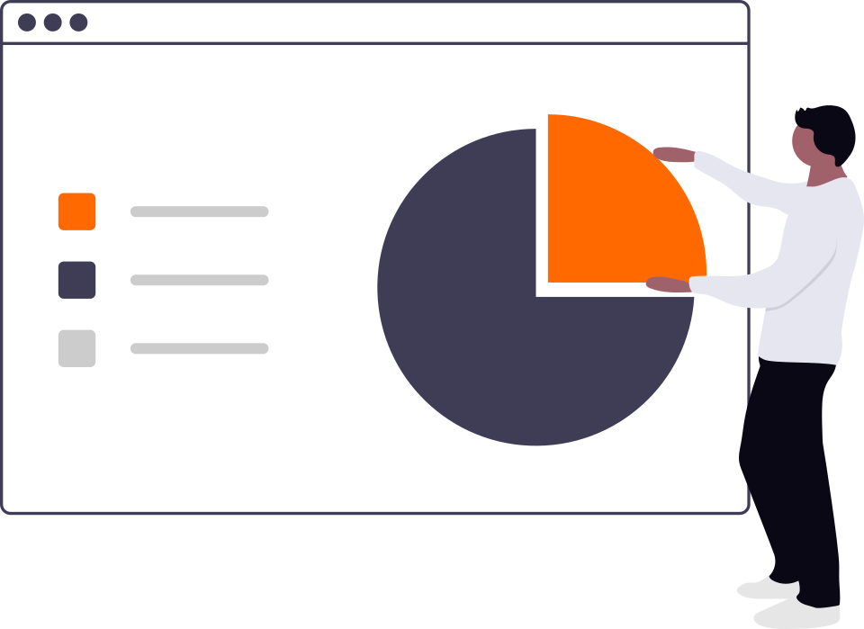
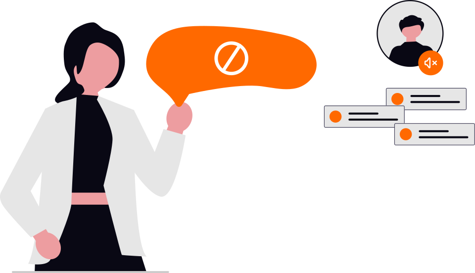
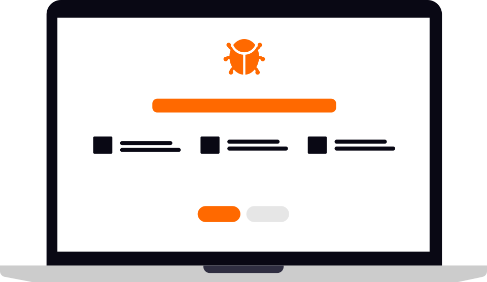
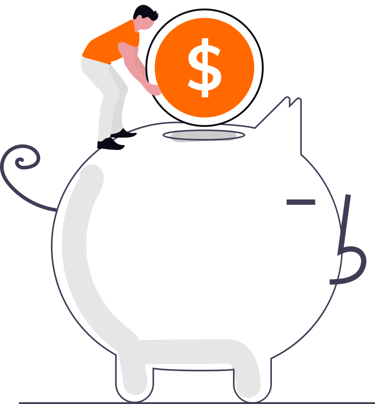
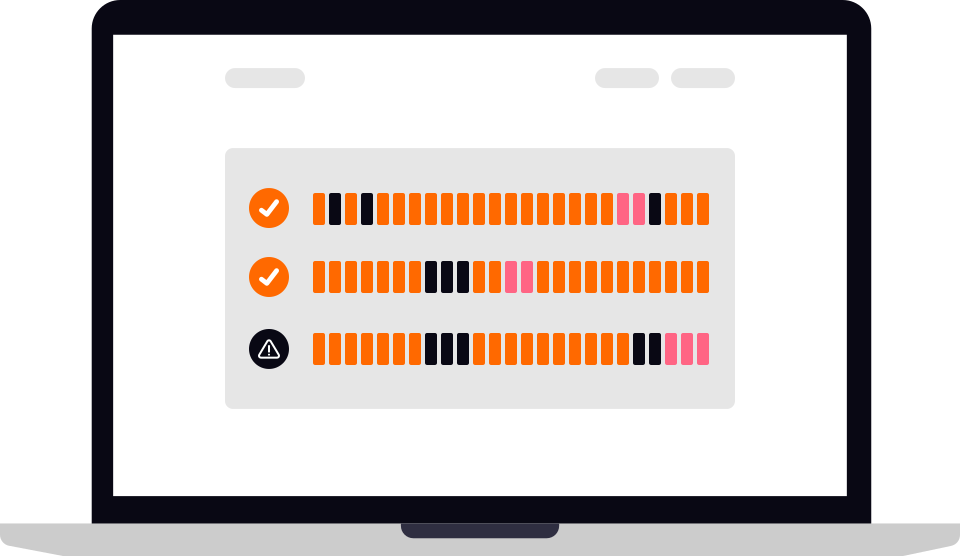

For community bank and credit union leaders, under $3 billion in assets
A practical guide to AI for banks and credit unions.
Artificial intelligence (AI) is becoming part of the software your institution uses and the work your staff do. This guide walks through the decisions that come with it, from approving a new tool to explaining a lending decision. Start with the section closest to what you're working on.
Read on
Form your own judgment about AI vendors, with guidance from a banking practitioner whose work includes both AI advice and paid builds.
By Ben Nichols, Founder & Principal Consultant, Upstate AI. Former Co-founder and COO of Directlink, where he built conversational AI for banks and credit unions. Last reviewed: September 29, 2026. Sources and applicability notes: Appendix A of the downloadable guide. General educational information, not legal advice. Confirm applicable requirements with qualified counsel or your regulator.
A colleague finds an AI tool that helps draft customer emails. Before using it at work, they need to know whether your institution allows it and which information they can share. Without that guidance, they may use it on their own or give up on a useful idea.
Agree on tools and data first
Explain which tools staff may use and what information may go into them.
Assign an owner to each system and agree with the board on the risks your institution will accept.
Keep approvals and reviews in one place within the existing risk program.
02
Part 1 · Introducing AI
AI in the software you already use.
Found an AI feature you need to understand? Bring it to a free 30-minute scoping session. We will identify unanswered questions and capture next steps together. Further review is scoped separately.

A vendor adds a feature
An update to your fraud platform or customer-management software includes AI. Your team may not have bought it separately, so it can be missing from the institution's AI inventory. The same goes for tools staff have started using themselves.
Include it in your vendor review
Ask what AI features are available, which are enabled, and what data they can access.
Include vendor features and staff-added tools alongside anything your institution has built.
Prioritize uses that affect credit, sensitive customer data, or fair treatment.
03
Part 1 · Introducing AI
Getting an AI pilot approved.

Compliance joins late in the pilot
A team is ready to launch, but compliance is only just hearing about the project. Questions about privacy or fair lending send the team back to work. An early review would have helped them plan for those requirements.
Set up the review before testing begins
Give staff a contact for proposed AI uses and identify who needs to review each one.
Match the legal, fairness, and privacy review to the proposed use.
Agree on launch criteria. Include fair lending specialists for credit uses and advertising review for customer claims.
04
Part 2 · Everyday use
Checking a vendor's test results.

The evidence comes from a different setting
A vendor's results can help you assess a model, but its tests may use different data or customers from yours. Before relying on the tool, your team needs evidence that it suits the work you intend to give it.
Test it on the work you plan to use it for
Validate models before use, with testing proportionate to their risk.
Review vendor evidence, test relevant cases, and record the limitations.
Include support, model changes, and ongoing review in vendor management.
05
Part 2 · Everyday use
Explaining an AI-assisted credit decision.

The decline notice gives a vague reason
A borrower receives a decline, but the notice doesn't explain what drove it. Your lending team needs to trace the decision and provide the required reasons. Using AI doesn't change the institution's fair lending or notice obligations.
Connect the notice to the decision
Test for unfair outcomes and inputs that may stand in for protected characteristics.
Check that the reasons in the notice reflect the actual decision.
Meet applicable ECOA and Regulation B notice requirements, including specific reasons or disclosure of the right to request them.
Provide the FCRA adverse-action notice, with required credit-score disclosures, when a consumer report was used in whole or in part.
Keep the decision record and supporting evidence under applicable retention requirements.
Example: consumer loan application. Illustrative reasons only. Commercial and small-business credit is outside this guide's scope. Sources: 12 CFR 1002.9, 1002.12; 15 U.S.C. 1681m(a).
06
Part 2 · Everyday use
Helping customers when the chatbot falls short.
A customer gets the wrong fee information
The chatbot gives an incorrect answer about a fee. The customer then has to find someone who can resolve it, often repeating the conversation. A handoff that carries the context through helps staff take over.
Plan the handoff to staff
Check answers against approved rates, fees, and terms, and define where human review is needed.
Require human approval before AI takes a consequential action.
Make it easy to reach staff and give them the conversation history they need.
07
Part 2 · Everyday use
Keeping track of AI after launch.

Staff start working around errors
A tool that passed testing begins making more mistakes. Staff correct them as they go, but nobody records the pattern. A change in the data or a vendor update may need attention beyond those individual fixes.
Give someone responsibility for follow-up
Track performance and give staff a way to report errors and near misses.
Set review triggers and name someone with authority to pause the tool.
Test the fallback process before you need to pause or retire the system.
08
Part 3 · Security and communications
Updating your security plan for AI.
Impersonation and file access need attention
A caller can use an AI-generated voice to impersonate an executive. Inside your institution, an AI assistant can make overshared files easier to find. These are different risks, but both belong in your existing security planning.
Rehearse the response with your team
Practice verifying unusual requests through a known contact, even when the voice sounds familiar.
Review file permissions before enabling an AI assistant and use phishing-resistant sign-in protection.
Record each regulator's reporting requirements, including what starts the clock and when notice is due.
Banks: notify your federal banking regulator as soon as possible, no later than 36 hours after determining a notification incident occurred. Federally insured credit unions: notify NCUA as soon as possible, no later than 72 hours after reasonably believing a reportable cyber incident occurred or receiving qualifying third-party notification, whichever is sooner. State rules: check separately. These apply to qualifying incidents, not every AI error. Sources: 12 CFR 53.3, 225.302, 304.23; 12 CFR 748.1(c).
09
Part 3 · Security and communications
Communicating with customers about your AI.
A draft promises more than the evidence shows
An announcement describes AI-assisted decisions as faster or fairer. Those claims need support before publication, whether a person or an AI tool wrote the draft. Customers will reasonably expect the service to match the description.
Use your advertising review process
Keep evidence for each external claim about what the AI does.
Review AI-drafted customer messages for accuracy before staff send them.
Explain limitations that affect what customers can expect.
Working this into your next risk review.
You can use these examples in the vendor, lending, and security reviews your institution already runs. Choose a tool you're using or considering, and work through the relevant sections with the people responsible for it.
Ask the person responsible for the tool to bring its approval record and latest review. Note any gaps and agree who will follow up.
Make your next AI decision with the right questions in front of you. Upstate AI helps community banks and credit unions define the need for AI, evaluate the evidence, and check whether what they buy, turn on or build meets those needs. Our work includes advisory services, implementation oversight and paid AI build engagements.
Start with one tool or vendor feature. In a free 30-minute session with Ben, we will identify unanswered questions and capture a short next-step list for internal review. This is not tool approval, legal advice, audit or completed model validation. Any further assessment or implementation work is scoped separately. Book a free 30-minute AI scoping session
Keep a copy for your team.
Share it with the colleagues involved in your institution's AI decisions.